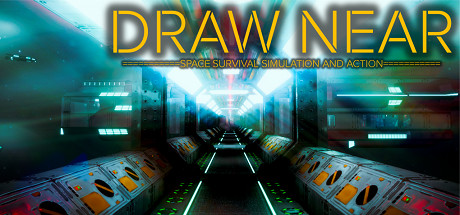

Draw Near
Draw Near
Details
|  | |
| Playtime | Not Played |
| Last Activity | Never |
| Added | 17/04/2020 |
| Modified | Never |
| Completion Status | Not Played |
| Source | Steam |
| Platform | PC |
| Release Date | 15/04/2018 |
| Community Score | 63 |
| Critic Score | |
| User Score | |
| Genre | Action Adventure Free to Play Indie Simulation |
| Developer | Omniscience |
| Publisher | Taiga Nishimura |
| Feature | Achievements Single Player VR VR Motion Controllers VR Room-Scale VR Standing |
| Links | PCGamingWiki Community Hub Discussions Guides Achievements Store Page News |
Description
You can play this game even if you do not have a VR headset.
It is divided into "non-VR main story mode" and "VR dedicated battle mode".
"VR dedicated battle mode" is just a bonus content. Do not expect too much because it is incomplete.
When you start the game while holding down the Shift key, Config related to the screen settings will be displayed. [/ b]
Let's take various actions and survive in the lonely universe!
You can choose the drifting ship you dock to by yourself.
By constructing new facilities, things that can be done will increase.
Let's take care of food.
Crafts require exclusive facilities and machinery, and in some cases electricity, water, oxygen and chemicals are necessary.
Various merits will arise if you help your companions.
Let's defeat the enemy and aim for high score! Score will be deducted if you take damage.
By using the built-in data synchronization function, you can share data with multiple devices.
From planning to release, it took about a year of time to complete.
http://store.steampowered.com/app/832950/Draw_Near__Donation/
It is divided into "non-VR main story mode" and "VR dedicated battle mode".
"VR dedicated battle mode" is just a bonus content. Do not expect too much because it is incomplete.
When you start the game while holding down the Shift key, Config related to the screen settings will be displayed. [/ b]
●Story
Huge meteorites suddenly collided with your spaceship and your ship is drifting in the outer space.Let's take various actions and survive in the lonely universe!
●Genre
Space survival simulation / action●Docking to drifting ships
Let's dock to ships drifting in outer space, explore inside, fight enemies and collect resources and items.You can choose the drifting ship you dock to by yourself.
●Expand spaceship freely
Let's expand your spaceship freely by using the brought back resources and items.By constructing new facilities, things that can be done will increase.
●Self-sufficiency
Self-sufficiency is important, such as operating thermal power generators and nuclear power generators, planting crops in fields and harvesting.Let's take care of food.
●Item craft
You can craft new items by combining items you have.Crafts require exclusive facilities and machinery, and in some cases electricity, water, oxygen and chemicals are necessary.
●Rescue companions
Let 's ride a Planet Exploration Boat and rescue companions who crashed by the collision of the meteorite.Various merits will arise if you help your companions.
●VR dedicated battle mode
VR dedicated battle mode is not related to main story.Let's defeat the enemy and aim for high score! Score will be deducted if you take damage.
●Multiplatform support
Windows, Android, iOS supported.By using the built-in data synchronization function, you can share data with multiple devices.
●Developer
The group of two self-taught high school students created this game.From planning to release, it took about a year of time to complete.
Donation
If you are satisfied with this game, please support us by purchasing this donation DLC.http://store.steampowered.com/app/832950/Draw_Near__Donation/